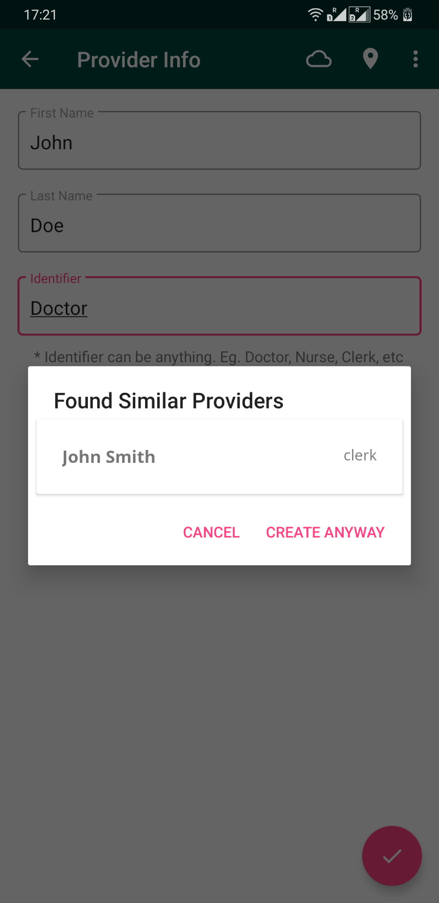

Provider Management
This module lets you manage Providers by providing actions such as Creating, Deleting or Editing Providers. You can also see all the other Providers, their roles and their relationships with other Providers or Patients.

Create Provider
 On opening the Provider Management, you are greeted with a screen with active providers and a Floating Action Button. Click on the Floating Action Button and it will take you to new screen asking for Provider details.
On opening the Provider Management, you are greeted with a screen with active providers and a Floating Action Button. Click on the Floating Action Button and it will take you to new screen asking for Provider details.
 The details are then matched with other existing Providers and a dialog box is shown for confirmation.
Update Providers
To update a Provider, swipe left on the Provider to reveal additional actions (Update and Delete). Click on the edit button. It will take you to a screen where the details can be edited.
Delete Providers
 To delete a Provider, swipe left on the Provider to reveal additional actions(Update and Delete). Click on the delete button and a confirmation to delete the Provider will be shown.
To delete a Provider, swipe left on the Provider to reveal additional actions(Update and Delete). Click on the delete button and a confirmation to delete the Provider will be shown.
Provider Relationship Dashboard
 Click on a particular Provider, to go to a new screen with the Provider's details. It has 2 tabs - Provider-Patient relationships and Provider-Provider relationships. Currently these screens are empty.
Click on a particular Provider, to go to a new screen with the Provider's details. It has 2 tabs - Provider-Patient relationships and Provider-Provider relationships. Currently these screens are empty.
Provider Relationship will be added to this screen in the future.
To learn more about the OpenMRS information model, take a look at this guide for developers.